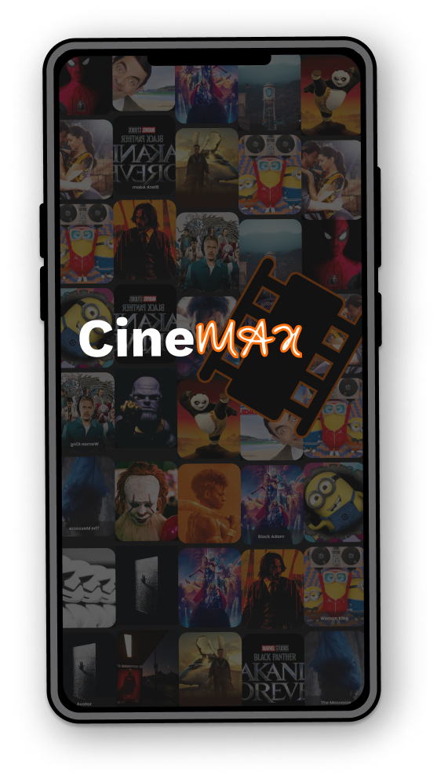

CineMax
CineMax is a movie theater ticket booking app that allows users to easily book movie tickets and also share those tickets with friends.
Role
UX Designer
Timeline
4 Weeks
Platform
Mobile App
Responsibilities
Conducting interviews, paper, and digital wireframing, creating Information Architecture, low and high-fidelity prototyping, conducting usability studies, accounting for accessibility, and iterating on designs.
Problem Statement
Movie ticket booking platforms rarely offer the option of distributing the tickets to the appropriate owners.
The platform for booking seats at the movie theater are often not equipped with options for people with disabilities.
Goals
Design a movie ticket booking app that simplifies the process for people with disabilities and offers the option to distribute movie tickets to different recipients.
Design Process
Understanding the User
Research, interviews, and personas
Starting the Design
Sketches and wireframes
Refining the Design
High-fidelity prototypes
Understanding the User
Interviews
During the ideation phase of the project, I conducted user interviews to build new personas and to inform the design. I prepared an interview script with 32 open-ended questions, focusing on our target audiences' values, motivations, and daily routines. In 4 days, I recruited and interviewed 7 users remotely. We referenced the user interview findings throughout the entire design process.
User Journey
With the user's pain point and business goal in mind, I made sure that our users are able to book a movie ticket without any hiccups. So, we sketched a current-state user journey map, to identify opportunities for improvement. We identified 2 unnecessary steps and potential dropoff points in the flow. By eliminating these from the new design, we ended up with a much faster booking experience that contributed to overall user satisfaction.
Personas
To empathize and understand the needs of the users, I created empathy maps and personas based on qualitative research conducted through user interviews.
According to the research, people with disabilities are frequently overlooked during the online movie ticket booking process. The research also confirmed the assumption that people will frequently book refreshments online to avoid long lines at movie theaters.
Information Architecture/User Flow
Starting the Design
Sketches
I began the design process with low-fidelity sketches and wireframes to accelerate decision-making through visualization without losing time. My sketches were based on the initial user interviews, the business goal, and the heuristic evaluation. I prioritized showing cinemas that have accessibility options for the user by including accessibility icons on the select theater screen, making it easy for users with disabilities to choose cinemas that are suitable for their condition.

Digital Wireframes
Using Figma, I translated my first sketches into low-fidelity wireframes. I made sure to base the screen design on feedback and user research findings. At this stage, the wireframes were defined enough for some user testing.
Usability Testing
I created a fully-functional, mid-fidelity prototype of the new flows using Figma. To confirm whether or not the product aligns with the actual expectations of the users. I conducted an unmoderated usability test with 7 users which span for 2 rounds.
Issue 01
Users need better options for assigning owners to tickets.
Solution 01
Early designs allowed for some customization, but after conducting usability tests, I revised the design to include a contact list where users can select and assign tickets' owners from their in-app contacts.
Refining the Design
UI Design
Once the usability issues were resolved, I moved on to design the final screens in Figma. My goal was to create a visual identity that aligned with the brand's values.
I used the dark theme, to give a sophisticated look and to pop the movie thumbnails.
For the app color style, I chose colors that met the WCAG and ran an AB test to validate the decision.
I focused on the Mobile platform, to cater to the present and next generation of users.
To help users understand the designs, I used detailed imagery for the snacks and added a movie trailer.
User Flow Optimization
Streamlined home screen focusing on quick movie discovery and accessibility options.
Ticket Sharing Feature

Innovative ticket distribution system allowing users to assign tickets to friends directly from their contacts.


Accessibility Considerations
For the app color style, I chose colors that met the WCAG and ran an AB test to validate the decision.
To help users understand the designs, I used detailed imagery for the snacks and added a movie trailer.
To cater to the needs of users who are underrepresented, specifically those with disabilities, I employed the use of accessibility icons to assist in selecting the ideal cinema.
Accessibility icons: For users with disability
Key Takeaways
Impact
A superb cinema-going experience is made possible by the CineMax app by simplifying the method of booking movie tickets and focusing more on how to make the experience comfortable for users with disabilities.
What I Learnt
In the process of creating an app, the first ideas don't have to be perfect. Hence, never underestimate the importance of user tests. Usability studies and peer feedback influenced each iteration of the app's design.
Next Steps
- Conduct another round of usability studies to validate whether the pain points users experienced have been effectively addressed.
- Conduct more user research to determine any new areas of need.
Try the Interactive Prototype
Experience the CineMax app yourself! Click through the interactive prototype below to explore the user flow and test the features we designed.
Tip: Click on interactive elements to navigate through the app flow
Open in Figma